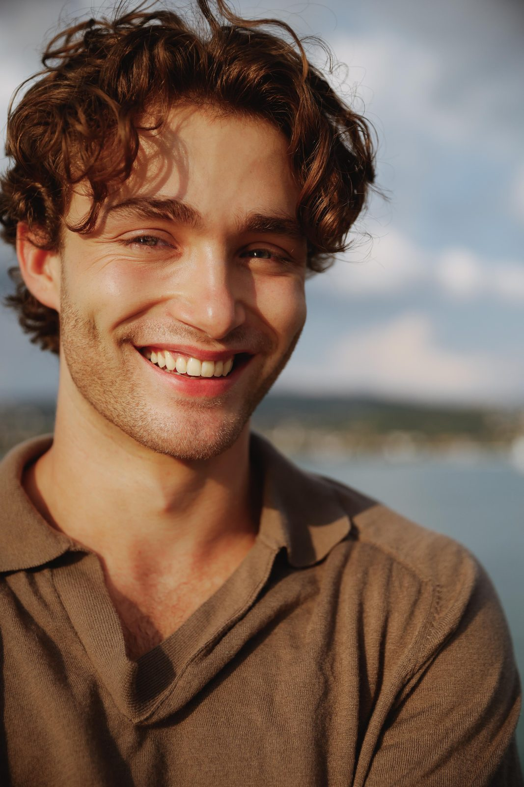
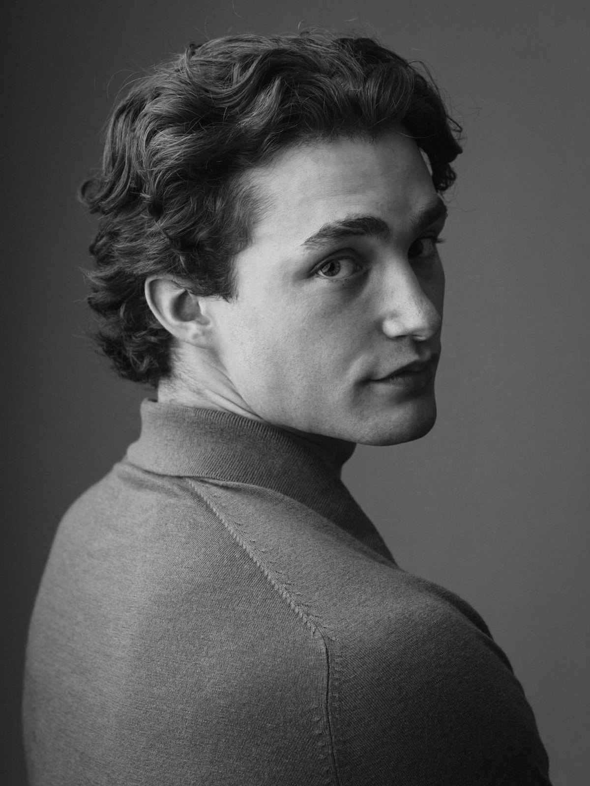

Der Weg · 5 Teile
01 · Das Was und das Warum
Unternehmertum interessiert mich schon lange (und nein, ich bin kein Guru, der nach der Lektüre von Rich Dad Poor Dad eine Erleuchtung hatte). Dafür gibt es mehrere Gründe. Einerseits sind mein Grossvater, mein Onkel, mein Vater und die meisten meiner Freunde selbstständig, was meine Kindheit und mein Leben grundlegend geprägt hat. Andererseits sind sowohl mein Charakter als auch mein Ausbildungs- und Berufsweg darauf ausgerichtet, ein eigenes Unternehmen zu gründen, ob im grösseren oder im kleineren Rahmen.
Modeling und Fitnesscoaching dienen mir derzeit als kleiner Spielplatz, auf dem ich die Vor- und Nachteile der Selbstständigkeit aus erster Hand erlebe. Natürlich habe ich meine Agenten und bisher ist keine GmbH oder AG im Spiel (das kann sich aber eines Tages ändern, wünsch mir Glück). Trotzdem hat es schon mehrere Lernmomente gebracht. Das beginnt bei der Lead-Generierung, geht weiter mit dem Aufbau von Partnernetzwerken, dem Anbahnen von Verträgen und der Ausführung von Aufträgen und reicht bis zur Nachbetreuung.
Meine Arbeit im SREC (Student's Real Estate Club) und im FLUX (Fashion & Luxury Business Club der Universität St. Gallen) verstärkt diese Dynamik zusätzlich. In diesen Rollen habe ich, ähnlich wie in einem Startup-Umfeld, viel Autonomie und kreative Freiheit, und mein Beitrag ist entscheidend dafür, dass die Organisation funktioniert.
Wenn heute, besonders in meiner Altersgruppe, über Unternehmertum gesprochen wird, ist das Bild, das oft aufkommt, das von Dropshipping-Shops oder SaaS-KI-Ventures, geführt von hypermaskulinen Männern in mittelmässigen Villen auf Bali. Weiter von meinen eigenen Ansprüchen und Ambitionen entfernt könnte das kaum sein. Wie auf den anderen Seiten vielleicht schon deutlich wurde, bin ich niemand, der Dinge halbherzig angeht oder Behauptungen aufstellt, ohne sie einzulösen.
Ich erwähne das, weil Social Media voll ist von Erklärungen und «So verdienst du schnell und einfach Geld»-Anleitungen, die den Eindruck erwecken, jeder solle ein Unternehmen gründen, als wäre das der einzige, beste und prestigeträchtigste Weg. Dieses Narrativ spiegelt sich auch in der grossen Zahl unbesetzter Lehrstellen in der Schweiz. Viele junge Menschen scheinen eine Art existenzielle Orientierungslosigkeit zu erleben.
Eine der wichtigsten Erkenntnisse, die ich aus Philosophiebüchern und Podcasts mitgenommen habe, ist die Bedeutung, ein klares Ziel zu definieren und es so weit wie möglich einzugrenzen. Deshalb spreche ich regelmässig mit meinen engsten Businesspartnern und Freunden über unsere Ambitionen und den aktuellen Stand unserer Projekte.
Mehr zu meinen aktuellen Projekten erzähle ich, sobald sie weiter sind. Beide liegen nah an meinen Interessen und Fähigkeiten, eines im B2C-Bereich und eines im B2B-Bereich. Über eines davon kann ich schon offen sprechen: Growis, das ich weiter unten in einem eigenen Kapitel beschreibe.
02 · Das Wie und das Wann (Teil 1)
Die Universität St. Gallen, oft gesehen als die erste Adresse für angehende Eliten oder für alle, die sich dafür halten. Spass beiseite: Warum habe ich meinen Bachelor an der Universität St. Gallen gemacht und dort auch den Master begonnen? Es gibt mehrere Gründe, und, wenig überraschend, war die Ausbildung selbst nicht der wichtigste.
Als ich mich nach dem Militärdienst mit 18, vor etwa sechseinhalb Jahren, für ein Studium entscheiden musste, hatte ich keine klare Vorstellung. Als Kind hatte ich einmal gesagt, ich wolle Anwalt werden, aber diese Idee war damals längst verblasst. Eine Zeit lang zog ich ernsthaft in Betracht, an der Universität Zürich Psychologie zu studieren, mit Germanistik als Nebenfach. Meine Überlegung war einfach: Das waren die Fächer, in denen meine Noten im Gymnasium nicht ganz so schlecht waren wie in den anderen. Ich war damals kein besonders guter Schüler.
Als ich an der Uni anfing, nach einer eher turbulenten Gymnasialzeit, die mehr von fehlender Disziplin und Ambition geprägt war als von konzentrierter Anstrengung, was ich für diese Lebensphase nicht unbedingt negativ sehe, verbrachte ich viel Zeit mit Ausgehen und besuchte die Vorlesungen nur mit mässigem Einsatz. Im Assessmentjahr wählte ich die Betriebswirtschaft. Die Fächer fand ich ziemlich interessant, hatte aber immer noch kein klares Gefühl dafür, was ich später machen wollte oder wer ich eigentlich war.
Das Ergebnis war vorhersehbar: Ich bestand das erste Jahr nicht. Es war einer meiner ersten grösseren akademischen Rückschläge. Viele meiner Freunde bestanden und studierten weiter, während ich durchfiel und mich neu sortieren musste. Von diesem Punkt an begann sich mein Leben grundlegend zu verändern.

03 · Das Wie und das Wann (Teil 2)
Ein Monster wurde geboren.
Dieser provokante Einstieg wurde nicht aus Eigenlob oder zur Selbstbestätigung gewählt, sondern einfach, um zu zeigen, wie grundlegend sich alles verändert hat. Damals war ich im Gym bereits gut in Form, doch fast jeder andere Bereich meines Lebens veränderte sich drastisch.
Hinter dieser Verwandlung steckte natürlich ein Prozess. Mit knapp zwanzig war ich noch nicht der Mensch, der ich heute bin, aber das Fundament wurde an dem Tag gelegt, an dem ich das erste Jahr nicht bestand. Vieles änderte sich grundlegend: die Medien, die ich konsumierte, mein Umgang mit Ernährung, meine Arbeitsethik gegenüber der Uni und vor allem meine Einstellung, die plötzlich jede Sekunde des Tages für etwas Sinnvolles nutzen wollte.
Ich hörte praktisch auf, Gaming-Videos, Anime oder Netflix-Serien zu schauen, und konzentrierte mich stattdessen auf Lernstrategien, Philosophie und Fragen nach dem Sinn des Lebens, Leistungssteigerung und Disziplin. Meine Einstellung damals war einfach und, im Rückblick, etwas übertrieben: «Wenn ich dieses Jahr nicht bestehe, habe ich nichts.» Das stimmte natürlich nicht ganz, und mit zunehmendem Alter habe ich erkannt, dass es viele andere mögliche Wege gab. Doch in meinem Kopf war es eine Hürde, die ich überwinden musste, um mir selbst zu beweisen, dass ich trotz nur leicht überdurchschnittlicher Intelligenz und schwacher Vorbereitung aus dem Gymnasium etwas erreichen kann, wenn ich es wirklich will.
Der Bodybuilder Tom Platz beschrieb seine Karriere einmal mit dem Satz: «Du musst es so sehr wollen, wie du atmen willst.» Die Aussage ist dramatisch, aber in jenem Moment war mir diese Art einfachen Denkens wichtig. Ein Jahr zuvor war es für mich normal gewesen, jeden Mittwochabend auszugehen und am nächsten Tag bis Mittag zu schlafen. Jetzt lag ich mittwochs um neun Uhr abends schon im Bett, und um sieben Uhr morgens stand ich in der Schlange vor dem Bibliotheksgebäude der Universität St. Gallen.
Um meine Einstellung und letztlich das Fundament für alles andere auf dieser Website zu verstehen, ist dieses Kapitel das wichtigste.
04 · Das Wie und das Wann (Teil 3)
Es fällt mir schwer, in Worte zu fassen, warum sich alles so drastisch änderte, aber es war wohl eine Kombination vieler Faktoren. Einerseits wollte ich die Erwartungen meiner damaligen Freundin erfüllen und meine Freunde beeindrucken. Andererseits gab es das Verantwortungsgefühl, dass ich gerade auf Kosten meiner Eltern studiert hatte und «gescheitert» war. Der grösste Faktor war aber, dass ich nicht mehr durchs Leben treiben und mich selbst enttäuschen wollte.
Ich dachte ständig darüber nach, wie ich am Ende meines Lebens zurückblicken würde, all das Potenzial sehen, das ich einmal hatte, und erkennen, dass ich es kurzfristigem Dopamin hinterhergejagt verschwendet hatte. Wie bei vielen Dingen im Leben kann ein kleiner Funke ein Feuer entfachen, und sobald es brennt, nimmt der Schwung von selbst zu.
Auf die anderen Lebensbereiche, die von dieser Wende beeinflusst wurden, gehe ich auf anderen Seiten ein. In den nächsten Sätzen konzentriere ich mich aber speziell auf die Universität, die Studentenvereine und meine Arbeit als Werkstudent.
Von da an lief an der Uni alles reibungslos. Ich schaffte starke Noten, was mir später die Türen für ein Studium in den USA öffnete und schliesslich zu Modeling-Möglichkeiten führte. Vieles baute von da an aufeinander auf.
Auch der Rest meines Bachelorstudiums verlief sehr reibungslos. Ich hielt einen hohen Anspruch an meine Arbeit, erzielte starke Noten und hatte keine grösseren Zeitprobleme. Meine Bachelorarbeit, der letzte Höhepunkt, wurde mit einer 6 bewertet, der höchsten Note im Schweizer Notensystem, und ich schloss mit einem sehr starken Gesamtdurchschnitt ab.
Das Masterprogramm folgt bisher einem ähnlichen Verlauf, auch wenn ich noch im ersten Semester bin und deshalb noch nicht viel dazu sagen kann. In diesem Sinn war die Frage der akademischen Leistung weitgehend geklärt. Im Rückblick ist es trotzdem interessant, dass ich das erste Jahr nicht bestand, den Bachelor später aber mit relativer Leichtigkeit abschloss. Ab dem zweiten Jahr, in dem Studierende sowohl die Anzahl als auch die Art ihrer Kurse selbst wählen können, wollte ich mehr als nur Uni. Meine ersten Modeling-Erfahrungen beschreibe ich im Modeling-Bereich, aber meine Hauptmotivation damals waren intellektuelle Auseinandersetzung, Berufserfahrung und der Aufbau eines Netzwerks. Deshalb trat ich dem Student's Real Estate Club bei, wo ich bis heute im Marketing aktiv bin.
Gleichzeitig bewarb ich mich auf eine Stelle bei einer kleinen Beratungstochter und bekam die Rolle, auch dank früherer Arbeitserfahrung im Unternehmen meines Vaters, mit einem Pensum von 40 bis 50 Prozent. In Kombination mit intensivem Training im Gym und einer damaligen Beziehung hatte dieser Zeitplan grossen Einfluss auf mein Zeitmanagement und schuf sehr viele feste Verpflichtungen. Ob man das positiv oder negativ sieht, überlasse ich den Lesenden. Für mich war es klar von Vorteil, weil ich so Berufserfahrung sammeln, ein Netzwerk aufbauen und das Gefühl haben konnte, gebraucht zu werden. Während der Bachelorjahre wurde mir durch Networking, berufliche Erfahrungen, Gespräche mit Freunden und besonders Diskussionen in meiner Familie immer klarer, dass ich langfristig etwas Eigenes aufbauen wollte, entweder neben anderen Tätigkeiten oder irgendwann als Hauptbeschäftigung. Diese Haltung festigte sich im Masterprogramm Business Innovation (MBI) noch weiter, in dem der Fokus auf Unternehmertum und dem Aufbau neuer Unternehmungen sie zusätzlich verstärkte.
Was wäre ein Kapitel über die Universität St. Gallen ohne eine tiefere Auseinandersetzung mit Networking? Networking, im Deutschen oft als Vitamin B (Beziehungen) bezeichnet, ist ein heikles Thema und wird in vielen Kreisen häufig belächelt. Es ist von zahlreichen Stereotypen umgeben. Manche behaupten, Unternehmen stellten nur Leute ein, die persönlich Senior Manager oder C-Level-Führungskräfte kennen. Andere meinen, an der Uni lerne man nichts Substanzielles, und die Studierenden sässen einfach in Cafés und diskutierten über ihre reichen Väter und deren Anlagefonds oder Immobilienportfolios, statt sich mit betriebswirtschaftlicher Forschung zu befassen.
Haben diese Vorwürfe eine gewisse Grundlage, und gibt es einen Grund, warum es sie gibt? Sicher. Sie treffen aber nur auf einen Teil des Umfelds zu, und es wäre schwierig zu sagen, wie gross dieser Teil tatsächlich ist.
Für viele Menschen ist die Universität St. Gallen einfach ein Ort, an dem sie Gleichgesinnte treffen. Sie bietet ein Umfeld, in dem Studierende Ideen austauschen, sich gegenseitig motivieren und Themen besprechen können, die anderswo selten aufkommen. Reichtum im rein kapitalistischen Sinn zu mehren steht nicht immer im Mittelpunkt. Oft drehen sich die Gespräche um Selbstverwirklichung, persönliche Entwicklung und das Gefühl, zu einer Gemeinschaft von Menschen mit ähnlichen Ambitionen zu gehören.
In dieser Hinsicht ist die Universität St. Gallen besonders stark: Gemeinschaft und gegenseitiger Respekt unter Menschen mit sehr unterschiedlichen Hintergründen und beruflichen Ambitionen. Ich hatte die Gelegenheit, Menschen mit ganz verschiedenen Erfahrungen kennenzulernen, von ihnen zu lernen und mit ihnen zu wachsen. Dafür bin ich der Universität zutiefst dankbar, denn sie hat meinen Prozess der Selbstfindung stark geprägt.

05 · Growis
Vor einiger Zeit habe ich bei Growis als Head of Growth angefangen. Es ist ein Herzensprojekt, das ich zusammen mit drei guten Freunden führe, die meisten ebenfalls von der Universität St. Gallen, und ich investiere viel Zeit und Geld hinein, weil ich wirklich an unsere Vision glaube.
Wir machen zweierlei. Wir betreiben Personal Branding für Gründerinnen und Gründer und bauen sogenannte Wissenssysteme auf, was in der Praxis heisst, Unternehmen auf die Arbeit mit KI-Anwendungen vorzubereiten und das Dokumentenmanagement drumherum zu übernehmen. Meine eigene Rolle ist in erster Linie Head of Growth, ich kümmere mich also um Vertrieb und Business Development, bin aber auch operativ in die Projekte eingebunden und spüre die direkte Wirkung dessen, was ich tue.
Bei Growis kann ich fast alles anwenden, was ich in meinem Berufsleben gelernt habe, sowie das, was ich gerade im MBI an der Universität St. Gallen studiere, besonders in den Bereichen Arbeit mit KI, Change Management, Führung und Projektmanagement. Alles kommt hier zusammen. Es ist fordernd, aber lohnender als fast alles andere, was ich mache, und es ist als langfristiges Projekt mit grossen Plänen und einer grossen Vision gedacht.
Wenn du mehr wissen willst, schau dir unsere Website genauer an: growis.ch.